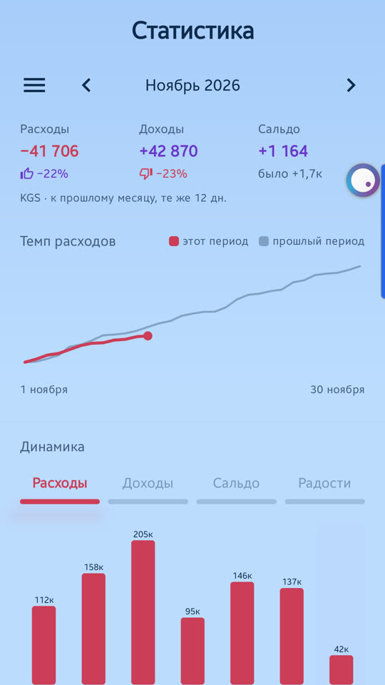
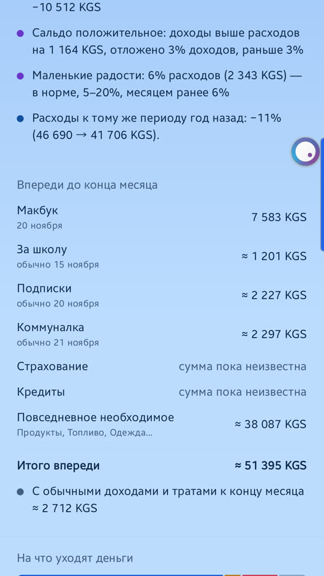

Экран «Статистика» отвечает на четыре вопроса: сколько ушло и пришло, больше это или меньше обычного, на что именно и что ещё впереди. Всё считается на телефоне и никуда не отправляется.
Период один на весь экран и написан вверху: «Ноябрь 2026». Стрелки рядом листают его назад и вперёд. Длину периода — день, неделя, месяц, квартал, год — выбирают в боковом меню. В будущее листать нельзя.

Сальдо — это доходы минус расходы. Под каждой цифрой — изменение к прошлому периоду.
Пока период не закончился, он сравнивается с таким же числом дней прошлого: 12 дней ноября — с первыми 12 днями октября. Об этом говорит подпись «к прошлому месяцу, те же 12 дн.».
Две линии: яркая — расходы этого периода с его начала, день за днём; бледная — то же за прошлый период. Яркая идёт выше бледной — вы тратите быстрее, чем в прошлый раз; ниже — медленнее.
Столбцы — это соседние периоды той же длины, выбранный подсвечен. Над столбцами переключатель: расходы, доходы, сальдо, радости (доля маленьких радостей в расходах). Нажмите на любой столбец — весь экран перейдёт на этот период.
Несколько строк словами: на чём вы больше всего сэкономили или потратили сверх прошлого, каким вышло сальдо, какая доля ушла на маленькие радости, как расходы выглядят к тому же периоду год назад, сколько было дней без расходов.
Блок появляется, когда записей хватает для сравнения: примерно месяц учёта.

Что ещё обычно приходит до конца месяца:
Ниже — прогноз остатка на конец месяца. Он не равен «в наличии минус итого»: в нём учтены ещё и ваши обычные доходы за это время.
Суммы берутся из последних шести месяцев. Если учёту меньше трёх месяцев, счета перечислены без суммы — «сумма пока неизвестна».
Одна полоса, разделённая на виды расходов, и доля каждого:
| Вид | Что в нём |
|---|---|
| Необходимое | продукты, жильё, коммуналка, связь, транспорт, подписки, кредиты, учёба |
| Увлечения и спорт | хобби, спортзал, секции, курсы, книги |
| Маленькие радости | кафе, вкусняшки, такси, подарки |
| Непредвиденное | ремонт, лечение, штрафы |
| Остальное | категории, которым вид не назначен |
Вид приложение назначает само по названию категории. Поменять его можно в карточке категории: «Настройки» → категория → «Что это за расход».
Маленькие радости говорят о качестве жизни: это приятное и недорогое — траты на себя, подарки, вкусняшки, кафе, такси. Ориентир по их доле в расходах такой:
Если радости за период больше доходов, приложение отметит это отдельной строкой.
Список категорий периода: сумма, доля в расходах и изменение к прошлому периоду. Переключатель «Расходы / Доходы» вверху списка. Нажмите на категорию — откроется её история по месяцам, подкатегории и причина изменения: стало больше покупок или вырос чек.
Эти строки не зависят от выбранного периода:
Сравнение ваших доходов и расходов за 30 дней со средней зарплатой и прожиточным минимумом. Цифры вы вводите сами в «Настройках», раздел «Мой регион»: они есть на сайте статистического комитета вашей страны. Если не вводить, блока не будет.